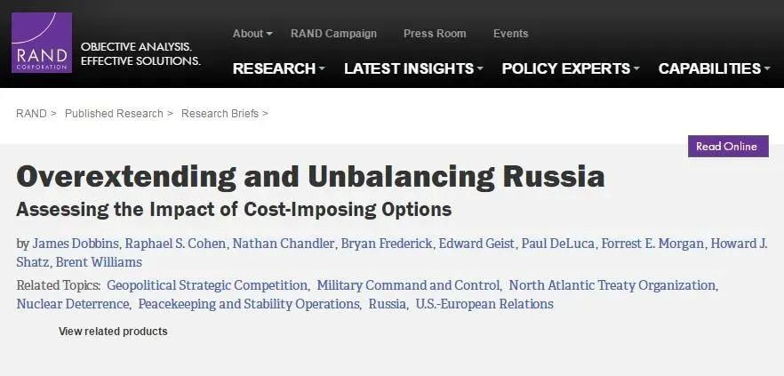
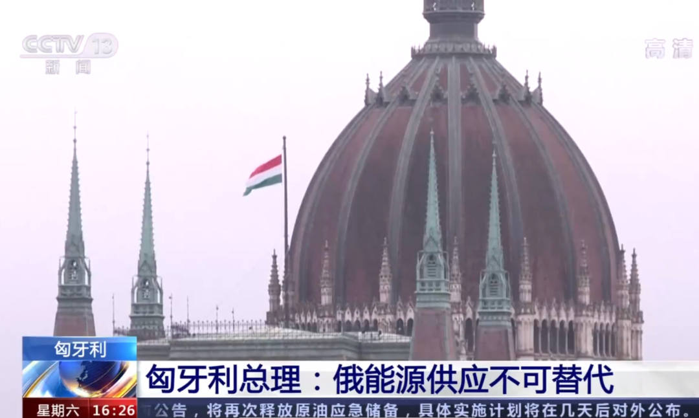
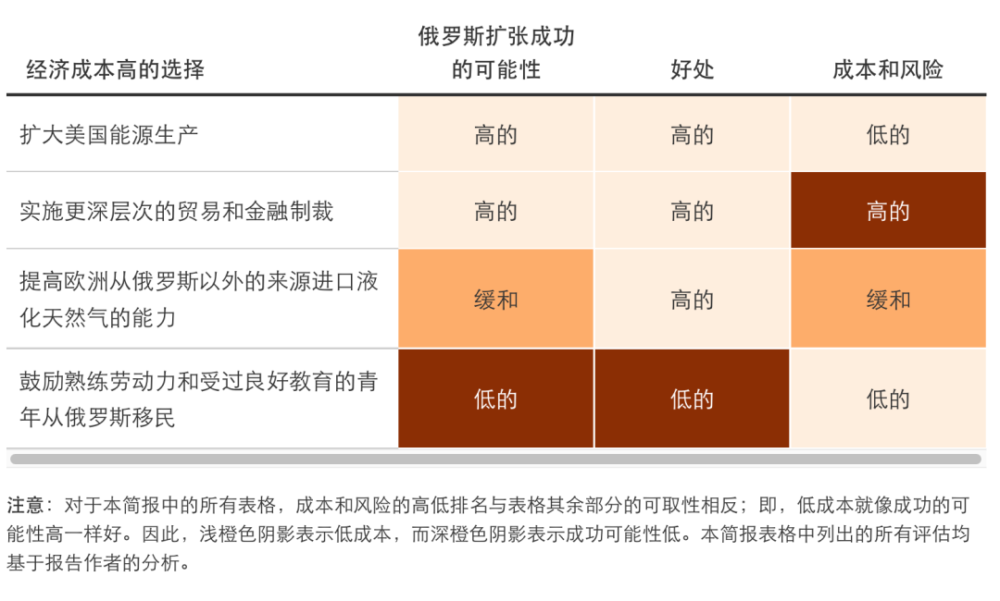
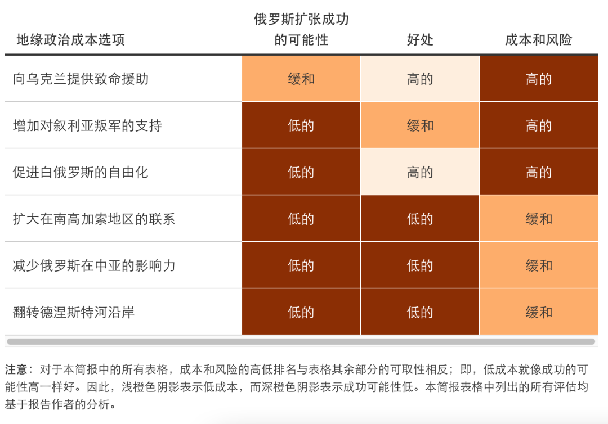
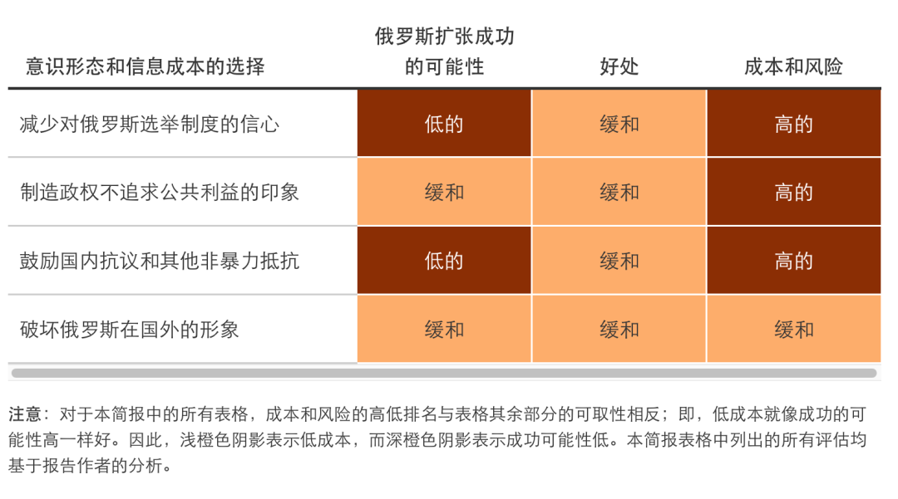
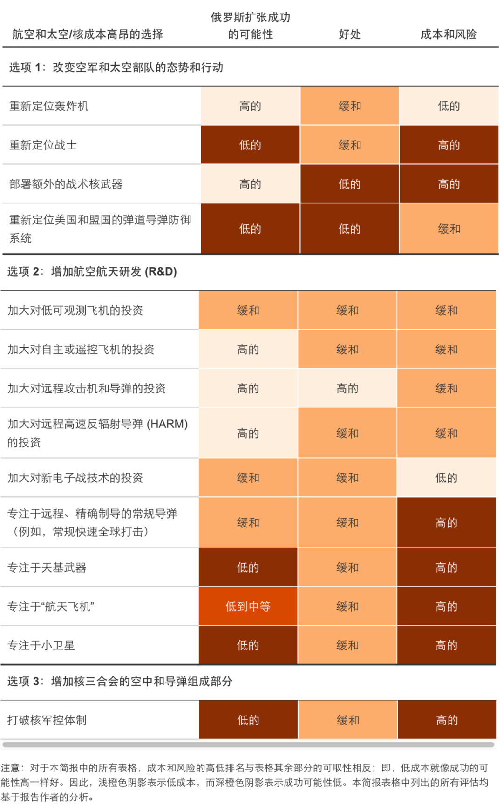
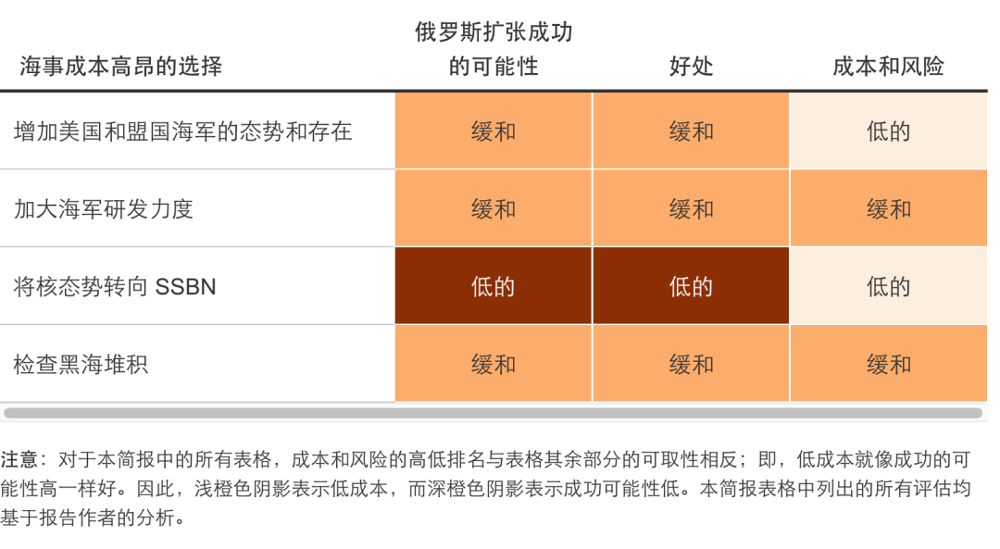
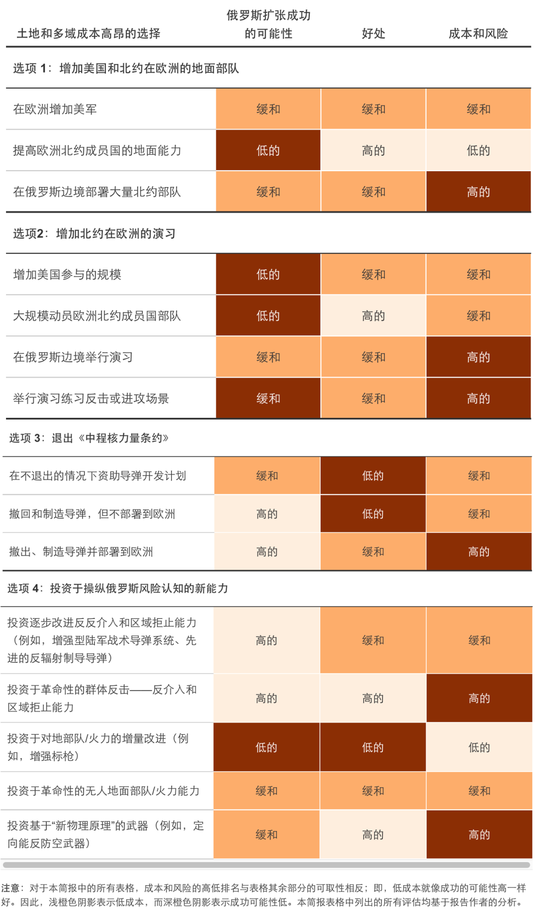
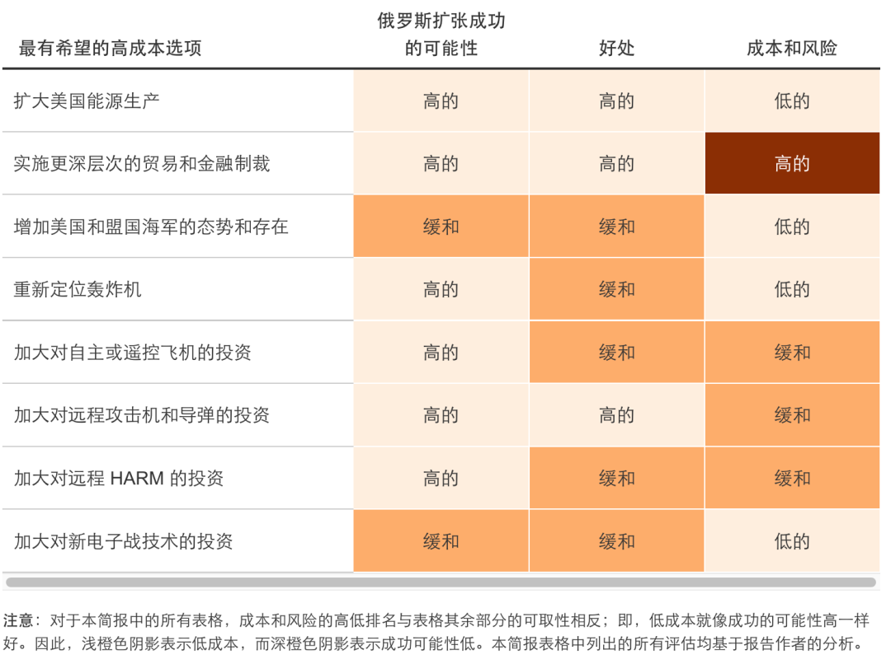

收录于合集
以下文章来源于文化纵横 ，作者西东
 文化纵横 .
文化纵横 .
倡导文化重建，共同思想未来，发掘不一样的深度阅读。

使俄罗斯过度扩张而失衡——评估美国对俄罗斯竞争的方案及其代价
作者： 兰德公司陆军研究部（执笔人：James Dobbins, Raphael S. Cohen, Nathan Chandler, Bryan Frederick, Edward Geist, Paul DeLuca, Forrest E. Morgan, Howard J. Shatz, Brent Williams）
来源： 兰德公司研究报告
导读
俄乌战事仍在持续，双方谈判似乎取得进展，但泽连斯基也公开表示，在事关乌克兰安全保障的问题上，乌克兰至今仍未得到美国支持，以至于人们猜测，美国似乎不愿俄乌停战。与此同时，近期五角大楼的一份国防战略报告也引起注意，其中明确，中国是美国“最重要的战略竞争对手”，俄罗斯则是美国“严重威胁”。
如何理解美国真实的战略意图？本文是美国智库兰德公司的一份对俄战略研报，从美方视角呈现了美国战略动机及其策略。 报告称，美俄某种程度的竞争是无法避免的，美国应放弃“全盘超越”想法，像当年对付苏联那样，迫使俄罗斯调用它本身有限的资源集中在对美威胁更小的领域。
报告认为，俄罗斯虽为大国，却有许多弱点和深层次焦虑， 可通过美国战略竞争的引导，使俄罗斯进一步失衡甚至“扩张过度”，从而给俄罗斯造成新负担。 报告从经济、地缘政治、意识形态和信息战、军事等方面作出定性评估，分析美国在这些方面取得优势的可能性，以及相应的利益、风险和成本。
值得注意的是，这份报告早在2019年就已发布，其中明确提出向乌克兰提供致命“援助”，将触及俄罗斯外部的最大弱点。 兰德公司认为，美国应仔细斟酌对乌援助和对乌建议，使俄罗斯难以恪守现有承诺；而给俄罗斯民众营造一种官方弃公众利益不顾的印象，也能使普京政府深陷政治动荡，进而无法染指西方的海外利益。鉴于俄罗斯并不寻求与美国军事对等， 报告建议，美国应直接触及俄罗斯的弱点及焦虑，使俄罗斯被迫“过度扩张”，成为一个发展不均且极度臃肿的大国。
“俄罗斯从没有看起来那么强大，但也没那么弱”，这句格言在本世纪仍然像在 19 和 20 世纪一样正确。
如今的俄罗斯有许多弱点：石油和天然气价格远低于峰值、进而导致人民生活水平降低、经济制裁“火上浇油”、人口老龄化和人口规模缩减、以及日益增长的“普京主义”。 俄罗斯正承受着这些弱点所带来的后果，并目睹它们与已有的深层焦虑合流，譬如被西方“启发”更迭政权、失去大国地位甚至被军事攻击。
尽管俄罗斯弱点多多、焦虑重重，我们不能否认，它仍是一个大国，在一些关键领域依然能与美国匹敌。正是认识到美俄将不可避免地开展某种程度的竞争，兰德公司对俄罗斯“代价高昂的竞争举措”作了定性评估。 这些举措有可能导致俄罗斯发展失衡甚至“过度扩张”，也会给俄罗斯带来新的负担，理论上比美国做出同样选择的代价要重得多。
**
**

本文网站截图
这项研究建立在冷战期间发展起来的“长期战略竞争”概念之上，其中一些起源于兰德公司。 兰德公司1972年的一份开创性报告认为，美国需要改变战略思维，放弃美国“全盘超越”的想法， 逐渐将竞争控制在只有美国占优势的领域上。报告总结说，如果这种转变能够成功， 美国可以驱使苏联调用它本身有限的资源集中在对美威胁更小的领域。
**
**兰德的新报告，将这一概念应用于现今的俄罗斯。兰德专家团队在经济、地缘政治、意识形态和信息战、军事方面作了定性评估，以了解美国在这些方面取得优势的可能性，以及相应的利益、风险和成本。
01
经济举措及其代价
扩大美国能源生产， 将对俄罗斯经济形成压力，从而间接限制俄罗斯政府预算，进而限制其国防开支。美国可以通过扩大全球供应和压低全球价格的举措，限制俄罗斯营收。 美国这样做的代价或风险很小，而且还能对美国经济产生二次效益，且不需要多边支持。
**
**
实施更深层次的贸易和金融制裁， 特别是全面且多边的制裁，也会削弱俄罗斯经济。基于此，制裁的有效性，将取决于其他国家愿不愿意加入。 但制裁总与代价相伴相生，并且其严重程度不同，可能带来相当大的风险。
**
** 提高欧洲从俄罗斯之外进口天然气的能力，
不仅可以给俄罗斯造成经济负担，还可以帮助欧洲抵御俄罗斯的能源胁迫。欧洲在造液化天然气（LNG）的再气化工厂，以缓慢贴近这一目标。但要让欧洲的防御真正有效，全球液化天然气市场需要更加灵活，液化天然气需要比俄罗斯天然气更具价格竞争力。

（近日匈牙利总理表示，不可能用昂贵的跨洋能源取代俄天然气，因此将在俄乌冲突中保持中立。据美国路孚特数据显示，美国3月份液化天然气出口量环比增加16%，达743万吨，创历史新高）
鼓励俄罗斯的熟练劳动力和受过良好教育的青年向外移民 ，这一举措几乎没有代价和风险，还可以帮助美国和其他俄移民接收国，更能伤害俄罗斯。 但任何影响，无论是对接收国有利的，还是对俄罗斯不利的，都难以觉察，除非经过相当长的一段时间。 而且这种举措也不太可能造成俄罗斯的“过度扩张”。

02
地缘政治举措及其代价
向乌克兰提供致命“援助”将触及俄罗斯外部的最大弱点。 但在增加对乌武器支援以及对乌建议的事项上，美国需仔细斟酌。 如此，既能增加俄罗斯恪守现有承诺的代价，同时又不会激发对俄有优势的更大范围的冲突。
增加对叙利亚叛军的支持，可能危及美国的其他优先事项， 例如对破坏整个地区稳定的激进伊斯兰恐怖主义进行打击。但鉴于叙利亚反对派的激进化、分裂和衰落，这项举措可能不再适用。
在白俄罗斯推动自由化，可能不会成功， 并可能引起俄罗斯的强烈反应，这将导致欧洲安全环境的普遍恶化和美国势力范围的倒退。
扩大美国在南高加索地区的角力。 由于地理和历史原因，与俄罗斯在该地进行经济竞争将是困难的。
缩减俄罗斯在中亚的影响力，将非常困难， 而且代价高昂。美国参与其中，不太可能给俄罗斯造成经济负担，反而会让美国付出不成比例的代价。
翻转德涅斯特河沿岸局势，将俄罗斯军队逐出此地， 可能打击俄罗斯威望，但此举也将节省俄罗斯的支出，反而对美国及其盟国带来额外成本。

03
意识形态与信息战举措及其代价
削弱俄罗斯人民对本国选举制度的信心，十分困难， 而且其官方控制着国内大多数媒体资源。美国贸然行动，可能会引起俄官方不满，而且可能招致严重的风险：促使俄官方加强相关信源管控，或可能发生与西方利益背道而驰的转移性冲突。
给俄罗斯民众营造一种官方弃公众利益不顾的印象， 这需要着重描绘俄官方普遍、大规模的腐败，进而挑战俄政权的合法性。但很难评估此举带来的政治动荡和抗议，是会让俄罗斯步履蹒跚，从而没法再影响西方的海外利益，还是会刺激俄罗斯更倾向于报复或挑动转移性冲突。在这方面，美国尚难轻举妄动。
鼓励俄罗斯民众抗议或 发起其他非暴力抵抗， 这将分散俄官方的注意力，或危及俄政权的稳定，继而降低俄对外实施激进行动的可能性。但此举风险很高，西方政府很难直接增加民众反对政权活动的发生率及其强度。
破坏俄罗斯的国际形象， 以削弱俄罗斯的地位和影响力，从而削弱俄政权恢复昔日辉煌的目标。进一步的制裁包括：将俄罗斯从非联合国国际论坛上除名、抵制世界杯等活动，这将损害俄罗斯的声望。但此举会损害俄罗斯国内稳定，且严重程度尚未可知。
以上措施的成功率都不高，但其中任何一种措施都将诱捕俄政权最深切的焦虑， 并有可能将其用作美国对俄罗斯的威慑，以此减少俄罗斯对外散布不实信息及鼓动颠覆“民主秩序”活动的可能性。

04
太空竞赛及其代价
在俄罗斯关键战略目标易打击的范围内，重新部署轰炸机， 很有可能成功，而且肯定会引起俄官方的注意和焦虑。只要轰炸机位于俄罗斯大部分战区弹道导弹和陆基巡航导弹的射程之外，此举的代价及风险就很低。
重新部署比轰炸机更接近目标的战斗机， 可能更让俄官方担心，因为战斗机具有更高的出动率，可以弥补其较小载荷。但此举成功的可能性很低，且风险很高。因为在常规冲突中，每架飞机都需飞行多个架次，俄官方可能自信地认为，他们能轻易地在战斗机停靠时摧毁它们及其部署机场。这种自信也使俄官方并不会大幅增加、甚至不会增加其导弹储备。
在欧亚地区部署额外的战术核武器， 可能会加重俄罗斯的焦虑，使其进一步增加对防空系统的投入。此举与轰炸机策略相结合，很有可能成功，但可能促使俄官方做出违背美国及其盟国利益的反应。
重新部署美国及其盟国的弹道导弹防御系统， 以更好与俄罗斯导弹交战，可能会唤起俄官方焦虑，但这可能是最无效的举措。因为俄罗斯只要利用导弹库存已有的一小部分，就能轻易地对冲现有防御系统及任何计划内的系统升级。俄罗斯还可留有富余的导弹，使美国及其盟国处于危险之中。
还有一些办法，能让俄罗斯在战略竞争中“过度扩张”。利用俄罗斯对美国太空军备力量和战略的恐惧，美国可以开发新的、隐身性更强的远程轰炸机，或简单地增加更多现有可用或已规划的机型（B-2和B-21），或开发自主或远程遥控的攻击机，并批量生产。这些举措都将刺激俄罗斯，使其为了建立更强、更机动、更冗余的指挥和控制系统，而把更多资源耗在太空竞赛上。
这些举措，虽能促使俄罗斯采取高成本的扩张策略，但也会让美国也卷入军备竞赛。 虽然美国投资弹道导弹防御系统和天基武器的举措，会让俄罗斯感到震撼，但他们也可采取远低于美国投入的方式，来防御此类举措。
至于成功的可能性，一些举措可大幅增加俄方投入， 其中有些，譬如投资高速反辐射导弹或其他电子战技术，综合评估显然更好。 有些举措应该避免，譬如专注于太空的武器或弹道导弹防御系统。
美国可能以打破核军备控制制度的方式，引诱俄罗斯进行代价高昂的军备竞赛， 但美国的收益，不太可能超过其成本。美国核军备竞赛的经济负担，和俄罗斯一样高，甚至更高。但更严重的代价，则是政治和战略上的。
**
**

**
**
05
海事竞赛及其代价
增加美国及其盟友海军在俄罗斯作战海区出现的频率， 可能迫使俄罗斯增加海军投入，从而使俄方不再聚焦于对美国更危险的领域。但重建真正的蓝海海军，并不太可能使得俄罗斯顾此失彼。
强化侧重于开发新武器的海军研发工作， 使美国潜艇拥有威胁更大海域或威吓俄罗斯核弹道导弹潜艇（SSBN）的能力，从而增加俄罗斯的反潜战成本。 此举风险有限，但成功与否，取决于能否发展这些能力，以及它们是否足以影响俄罗斯的支出。
将核态势转向SSBN， 将使俄罗斯扩大舰队规模，美国核三合会集中在SSBN的力量也需随之增加。这一举措虽然会迫使俄罗斯投资两大洋的海军力量，从而降低美国战略态势的风险，但不太可能动摇俄罗斯的现有战略，也无法造成过多负担。
检查黑海的海事部署，将推高俄罗斯保卫克里米亚基地的成本，并压减俄罗斯占领克里米亚的利益所得。 此举意味着北约组织将加强黑海区域的反介入和区域拒止（可能以远程陆基反舰导弹为手段）。俄罗斯将随之发起一波强有力的外交和信息宣传，以劝阻沿岸的北约和非北约国家参与。但是相对俄罗斯海军，美国海军要想在黑海开展行动，政治和后勤方面挑战更大，并将承担更大危险。

06
地面部署、多域合作举措及其成本
在欧洲增配美军、增配北约成员国的地面部署、在俄边境部署大量北约部队，可能对引诱俄罗斯“过度扩张”影响有限。 所有举措都会增强威慑，但风险各不相同。增配北约地面军队部署，包括缩小北约成员国的战备差距和增加美军在西欧常规地点的规模，仅仅会带来有限风险。 但在俄边境，尤其在乌克兰东部、白俄罗斯或高加索等地进行大规模部署，将被视为挑战俄罗斯，将极大增加风险。
**
**
增加北约在欧洲演习的规模和频率，有可能增强战备和威慑，但除非演习发出危险信号，俄罗斯不太可能做出代价高昂的应对举措。 在俄罗斯边境附近举行大规模北约防御及进攻演习，可能会被俄罗斯视为明显的进攻意图。例如，一场以夺回因俄军队扩张而失去的北约领土的模拟反击演习，可能会让俄罗斯认为，这是在做入侵俄领土（例如加里宁格勒）的准备。
开发但不部署中程导弹， 或许可以使俄罗斯重新遵守《中程核力量条约》，但也可能促使俄罗斯加快导弹计划。如果美国退出该条约并制造导弹，但不在欧洲部署，这种情况对美国能力增益无几，反而可能促使俄罗斯部署这种导弹——也许还会促使俄罗斯在弹道导弹防御投入更多。假设北约盟国愿意在欧洲进一步部署导弹，几乎可以肯定，俄罗斯会做出反应，并且动用大量资源，或者至少会把大量资源从其他国防开支中转移到这里。但此举很难评估俄罗斯会如何调整防御资源和进攻资源的配置。
增加新技术投资， 比如对抗俄罗斯的防空系统和美国远程火力，可以显著提高美国的防御和威慑，迫使俄罗斯增加在对冲措施上的投资。 鉴于俄罗斯对新物理原理用于军备深怀担忧，投资革命性的下一代技术产品，可能使俄罗斯分寸大乱。 但此类举措有可能使俄罗斯政权及其领导层受到颠覆威胁，从而波及美国自身的战略稳定。

07
针对美国陆军的三点结论
“过度扩张”俄罗斯的任务，用不着陆军乃至美国武装部队来承担。 事实上，最有可能“臃肿”俄罗斯的方式——对美利益最大、风险最小、成功可能性最大的方式——可能不在军事领域。
**
**
俄罗斯不寻求与美国军事对等，因此他们有可能只是简单地不对美国的军事行动（例如革新美国海军）做出回应。 其他军事行动（例如在俄边境进行军事部署），可能让美国付出比俄罗斯更大的代价。尽管事实如此，我们的研究成果至少对美国陆军提出三点适用的结论：
1.美军应重建针对俄罗斯的语言和分析的专业能力。 俄罗斯对美国确实构成长期威胁，美军需要发展这方面的专业人力资源，来参与这一战略竞争。
2.美军应考虑并进一步加大其他军种的投资， 例如陆军战术导弹系统、“间接火力保护能力”增量2（IFPC Inc 2）、远程防空系统以及其他对抗俄罗斯反介入和区域拒止的系统。美军还可考虑把一些研发资源用于不太成熟、面向未来的系统（例如，集群无人机或远程作战车辆）。虽然这些措施本身可能不足以让俄罗斯大幅“扩张”，但它们有利于增加美国的威慑能力，并可以强化美国政府的整体政策。
3.即使美军不直接促使俄罗斯“扩张”，它也要在抑制俄罗斯均衡发展方面，发挥举足轻重的作用。 所有促使俄罗斯“扩张”的策略，都伴随着一定风险。因此，加强美国在欧洲的威慑力及美国军事能力，需要与促使俄罗斯“臃肿”的举措齐头并进，从而对冲俄罗斯紧张局势升级为冲突的可能性。
08
结论
美国的策略，是迫使俄罗斯增加不必要的军事扩张。但美国要采取的措施，应直接触及俄罗斯的弱点和深层焦虑，削弱俄罗斯现有优势。俄罗斯与美国竞争的最大弱点是经济，俄经济规模相对较小，并高度依赖能源出口。俄罗斯领导层最大的焦虑，是政权的稳定性和持久性。 而俄罗斯最大的优势，在于军事和信息战领域。
下表为前面表格的总结，以此确定美国最有可能成功的举措：

本文所讨论的大多数举措，某种意义上说，都过分激烈，而且大多数举措，可能会引发俄罗斯的对冲反应。因此，除了每个举措都有其特定风险之外， 与拥有核武器的对手开展激烈竞争，还需考虑额外风险。这意味着每个举措，都要经过深思熟虑和仔细斟酌，才能把影响控制在预期范围内。 总之，相比俄罗斯，虽然美国更能承受竞争加剧的代价，但美国也不得不调整转移国家资源。当然，我们这里讨论的种种举措，也不都是为了促使俄罗斯“扩张”。相反，这些举措选项，必须立足于美国的国家利益，包括国防和威慑，以及当美俄利益一致时所开展的合作。
排版 | 朱诗卉
本文为兰德公司研究报告，由文化纵横新媒体编译发布，文章观点不代表本平台观点。